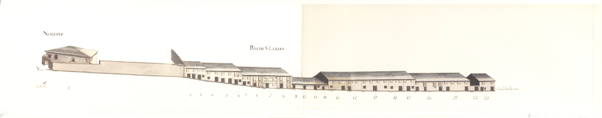

Rua de S.Lázaro - Nascente.

Rua de S.Lázaro - Poente.
Rua de S.Lázaro - Nascente.
Rua de S.Lázaro - Poente.
Troço da grande via que ligava a Arcada à ponte de Guimarães , entre a rua de Águas e o terreiro de S. Lázaro .
Aberta ainda na Idade Média esta velha rua tem o prazo mais antigo com a data de 1451 .
Apesar de em 1750 ser ainda de arrabalde, havia nas suas casas uma certa diferença em relação a outras com função semelhante: embora apenas com dois pisos, e apesar de haver algumas habitações do tipo já descrito de porta com janela ao lado no piso térreo, a maior largura das suas fachadas, a existência de uma ou outra varanda de ferro ou recoberta por gelosias, ou ainda de "molduras" de pedra, sobretudo em algumas portas, confere-lhe quase outro estatuto de grandeza.
É curioso notar que nesta rua, que tinha 19 casas do lado Nascente e 29 do Poente, todos os edifícios estavam emprazados ao Cabido.
A rua de S. Lázaro corresponde hoje ao fragmento da avenida da Liberdade , entre o largo do Rechicho e a rua 25 de Abril .
O enfiteuta era filho de Franciso de Barros de Almeidae de sua mulher, D.Isabel Cecília Pereira de Carvalho.
A casa confronta, do norte, com a cangosta que vai da Rua das Águas para Nossa Senhora a Branca . O emprazamento mais antigo que se conhece é de 1451 . Pertencem a este prazo os nºs 2 a 23 e, na Rua da Ponte de Guimarães , os nºs 1 a 19 e 75 a 88, bem como a leira de hortas na freguesia de S. Pedro de Maximinos . Esta casa é cabeça de prazo denominado "Casal ou quinta de Portas" .
Manuel Gomes de Oliveira, ourives, casado com Ângela de Araújo, paga 190 reis ao subenfiteuta da casa nº 4. A casa nº 2 confronta, do norte, com o quintal do nº 1.
Os herdeiros de Domingos Fernandes, palmilhador, viúvo de Ana Lopes, pagam 380 reis ao nº 1. Nesta pensão estão incluídos os nº 2 e 3.
A casa nº 4 foi construída antes de 1702 e a nº 5 antes de 1695 .
Os herdeiros de António Lopes Pereira, casado com Mariana Francisca, pagam 310 reis ao nº 1. Foram construídas antes de 1720 .
Os herdeiros de João Barbosa, sombreeiro, casado com Maria Francisca, pagam 620 reis ao nº 1. Foram construídas antes de 1720 .
Os herdeiros de João Correia, pintor, casado com Custódia Gomes, pagam 265 reis ao nº 1. Foi construída antes de 1666 .
Padre Francisco Gomes da Costapaga 265 reis ao nº 1. Foi construída antes de 1666 .
José Rodrigues, estudante, filho de Manuel Rodrigues, sombreireiro, paga 540 reis ao nº 1. Foram construídas antes de 1650 .
Apolónia Mendesviúva de Manuel Rodriguessombreireiro, paga 510 reis ao nº 1.
Foi construída antes de 1650 .
Dionísio José de Gouveia Ferrazpaga 1020 reis ao nº 1.
Manuel de Fariatabelião de Braga , paga 1005 reis ao nº 1.
A casa nº 19 foi construída antes de 1576 .
Diogo Leite Coelho, inquiridor do secular, casado com Serafina Pereira de Araújopaga 1030 reis ao nº 1. Foi construída antes de 1618 e esteve unida, entre os anos 1629 e 1720, à casa nº 21.
Miguel de Sousa, casado com Teresa da Silva, paga 1020 reis ao nº 1.
Porta de serventia do Casal de Portas (casa nº1) .
Agostinho Ribeiro Mirrado, casado com Páscoa do Valepaga 2780 reis ao nº 1. Confronta, do sul, com o nº1 da Rua da Ponte de Guimarães ou Terreiro de S. Lázaro , e foi construída antes de 1592. Até 1720 fizeram parte desta escritura de prazo, as casas nº 1, 2 e 3 da referida Rua da Ponte de Guimarães .
Rosa Maria, solteira, paga 562 reis ao nº 42.
A casa nº 24 possui a frontaria e serventia principais para o terreiro de S. Lázaro , com a qual confronta de sul. O nº 25 foi unido ao nº 24 em 1725 .
António Vieirapaga 603 reis ao nº 42. Foram construídas antes de 1625 .
Catarina Gomespaga 410 reis ao nº 42. Foi construída antes de 1625 e esteve unida, até 1732 , ao nº 30.
Luís de Abreu, sapateiro, casado com Maria Mendes, paga 416 reis ao nº 42.
Custódia Dantas, viúva, paga 3005 reis ao nº 42. Foi construída antes de 1701 .
Joana de Araújo, viúva de João Pereira, torneiro, paga 1806 reis ao nº 42. Encontram-se unidas desde o ano de 1700 .
Domingos, filho de André Francisco, trabalhador, e de sua mulher, Maria Afonso, paga, por esta casa, (que era de seus pais), 1206 reis ao nº 42. Foi construída antes de 1700 .
João Francisco, viúvo, paga 2010 reis ao nº 42. Foi construída antes de 1700 .
Guilherme António, ferreiro, casado com Helena Francisca, paga 128 reis ao nº 42. Foi construída antes de 1732 .
João Martins, torneiro, casado com Maria de Freitas, paga 2205 reis ao nº 42.
Foi construída antes de 1700 .
Jerónima Correia, viúva de Miguel Ferreira, paga 1108 reis ao nº 42. Foi construída antes de 1700 .
Lic. Domingos Soares da Silva, juiz das sisas, paga 1108 reis ao nº 42. Foi construída antes de 1700 .
António de Araújo, sapateiro, casado com Maria Ferreira, paga 1503 reis ao nº 42. Foi construída antes de 1732 .
António da Costa de Araújo, casado com Ventura Cerqueira, paga 304 reis ao nº 42.
Foi construída antes de 1719 .
Esta casa é cabeça de prazo denominado "Casal dos Alamos" . Em 1670 este prazo era constituído pelos nº 24 a 53, nº 9 a 12 da Rua de Trás de S. Marcos , ou Granjinhos , e, ainda, por uma leira e casas na Rua da Ponte de Guimarães ou Terreiro de S. Lázaro , nº 89 a 92. Foi construída antes de 1485.
Os herdeiros de António de Araújo, casado com Grácia Antunes, pagam 2100 reis ao nº 42.
Foi construída antes de 1724 .
Os herdeiros de Pedro Rodrigues, escrivão de Braga , casado com Helena de Almeida, pagam 4200 reis ao nº 42.
Foi construída antes de 1722 .
Os herdeiros de João Francisco, torneiro, casado com Isabel Correia, pagam 2100 reis ao nº 42.
Foi construída antes de 1719 .
Bento, filho de Manuel Ferreira, mercador, paga 2100 reis ao nº 42. Foi construída antes de 1718 .
Agostinho de Araújo, sombreeiro, casado com Francisca da Silva, paga 2100 reis ao nº 42.
Foi construída antes de 1718 , em pertenças do nº 50, prazo à qual esteve unida até 1732 .
Domingos Gonçalves de Paiva, ourives, casado com Ursula Correia, paga 2600 reis ao nº 42.
Foi construída antes de 1718 , em pertenças do nº 50, prazo à qual esteve unida até 1732 .
Padre Custódio Correia Faria, paga 1600 reis ao nº 42. Foi construída antes de 1718 , em pertenças do nº 50, prazo à qual esteve unida até 1732 .
Manuel de Freitas, sombreeiro, casado com Maria de Araújo, paga 2100 reis ao nº 42.
Até ao ano de 1732 faziam parte desta escritura de prazo os nº 47, 48 e 49.
Francisco Monteiro, tecelão de seda, casado com Teresa da Rocha, paga 2000 reis ao nº 42. Foi construída antes de 1720 .
António Marques, casado com Custódia de Araújo, paga 2000 reis ao nº 42.
Foi construída antes de 1718 .
Manuel Ferreira, estudante, paga 2000 reis ao nº 42. Confronta, do norte, com a cangosta que vem de trás de S. Marcos para a Rua das Águas . Foi construída antes 1718 .
| Número de porta | Enfiteuta |
|---|---|
| 1 | Lopo de Barros e Almeida |
| 2 e 3 | Herdeiros de Domingos Fernandes |
| 4 e 5 | Lopo de Barros e Almeida |
| 6 | Lopo de Barros e Almeida |
| 7 e 8 | Lopo de Barros e Almeida |
| 9 | Lopo de Barros e Almeida |
| 10 | Lopo de Barros e Almeida |
| 11, 12, 13 e 14 | Lopo de Barros e Almeida |
| 15 | Lopo de Barros e Almeida |
| 16 e 17 | Lopo de Barros e Almeida |
| 18 e 19 | Lopo de Barros e Almeida |
| 20 | Lopo de Barros e Almeida |
| 21 | Lopo de Barros e Almeida |
| 22 | None |
| 23 | Lopo de Barros e Almeida |
| 24 e 25 | Pedro Gomes de Basto, c.c. Maria de Magalhães |
| 26 e 27 | Pedro Gomes de Basto, c.c. Maria de Magalhães |
| 28 | Pedro Gomes de Basto, c.c. Maria de Magalhães |
| 29 e 30 | Pedro Gomes de Basto, c.c. Maria de Magalhães |
| 31 | Pedro Gomes de Basto, c.c. Maria de Magalhães |
| 32 e 33 | Pedro Gomes de Basto, c.c. Maria de Magalhães |
| 34 | Pedro Gomes de Basto, c.c. Maria de Magalhães |
| 35 | Pedro Gomes de Basto, c.c. Maria de Magalhães |
| 36 | Pedro Gomes de Basto, c.c. Maria de Magalhães |
| 37 | Pedro Gomes de Basto, c.c. Maria de Magalhães |
| 38 | Pedro Gomes de Basto, c.c. Maria de Magalhães |
| 39 | Pedro Gomes de Basto, c.c. Maria de Magalhães |
| 40 | Pedro Gomes de Basto, c.c. Maria de Magalhães |
| 41 | Pedro Gomes de Basto, c.c. Maria de Magalhães |
| 42 | Pedro Gomes de Basto, c.c. Maria de Magalhães |
| 43 | Pedro Gomes de Basto, c.c. Maria de Magalhães |
| 44 | Pedro Gomes de Basto, c.c. Maria de Magalhães |
| 45 | Pedro Gomes de Basto, c.c. Maria de Magalhães |
| 46 | Pedro Gomes de Basto, c.c. Maria de Magalhães |
| 47 | Pedro Gomes de Basto, c.c. Maria de Magalhães |
| 48 | Pedro Gomes de Basto, c.c. Maria de Magalhães |
| 49 | Pedro Gomes de Basto, c.c. Maria de Magalhães |
| 50 | Pedro Gomes de Basto, c.c. Maria de Magalhães |
| 51 | Pedro Gomes de Basto, c.c. Maria de Magalhães |
| 52 | Pedro Gomes de Basto, c.c. Maria de Magalhães |
| 53 | Pedro Gomes de Basto, c.c. Maria de Magalhães |